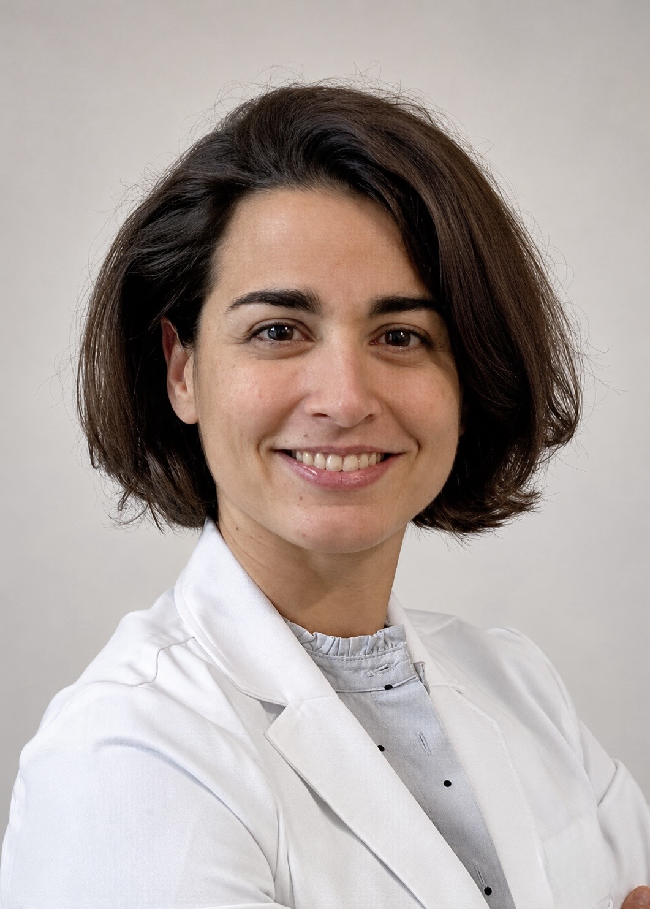

Hand surgery
Surgery for conditions and injuries affecting the hand, with a focus on functional recovery.
Dr. Charlotte Jaloux, MD, PhD
Dr. Charlotte Jaloux is a member of the plastic surgery team at the Montreal General Hospital.
1650 Cedar Avenue · Room L9-200
Montréal (QC) H3G 1A4 · Canada
McGill University Health Centre (MUHC)

Her clinical background includes hand surgery, complex reconstruction, peripheral nerve injuries and surgery for upper-limb spasticity.
Surgery for conditions and injuries affecting the hand, with a focus on functional recovery.
Reconstruction following complex injuries, including traumatic injuries.
Surgery for peripheral nerve injuries as part of reconstruction and functional recovery.
Reconstructive surgery of the arm and hand in the context of spasticity.